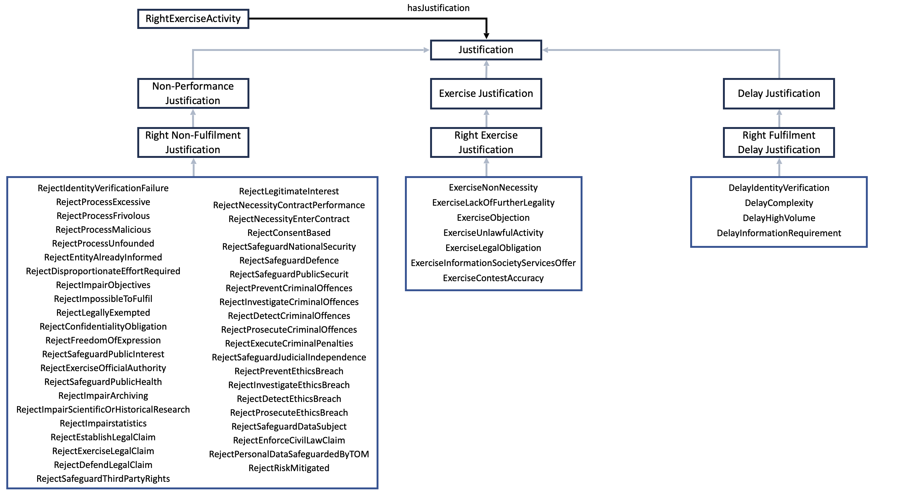

@ -0,0 +1,40 @@
Justifications for Rights Exercising
This document outlines the identified concepts required to justify the exercising of data subject's rights,
including justifications to delay or not fulfil such rights.
Overview
The motivation for this work is derived from the need to create and maintain records of the exercising
of data subject's rights under the GDPR.
This work was developed (and is already integrated) within the context of the DPVCG and was started with
the main objectives of indicating
what rights exist
where such rights can be exercised
what information needs to be recorded and maintained when a concrete instance of a right is being/was exercise
As such, the flows of information between a data subject and a data controller for the
exercising of a right request, according to the GDPR, were analysed to extract the relevant concepts to be recorded.
Figure 1 illustrates these flows.
After sending a notice to the data subject
confirming that the request was received, the controller must be able to identify the data subject in
order to proceed with the request (Article 12.2, second sentence). If the controller cannot
identify the data subject, then the data subject must provide additional information to enable the
controller to identify them (Article 11.2). If the controller disregards the request or has
a justification for not fulfilling the right, then the data subject does not receive any information
related to the right request (Article 12.2, second sentence). In case the controller has
a justification to delay the request due to its complexity or a high number of requests, then
the controller has a 2-month extension to fulfil its duty (Article 12.3, second sentence).
Moreover, in case the request is unfounded or excessive, the controller can charge a fee and the
data subject will get the information once this fee is paid (Article 12.5, first sentence). As
it is visible by the diagram, at any point if the data controller does not fulfil its duty then a GDPR
breach occurs and the data subject does not receive their requested information.
Flow diagram of GDPR data subject rights exercising, according to Article 12.
As will be explored in the next section, from the analysis of these flows of information,
a set of high-level concepts was proposed and adopted by the
DPVCG
(general concepts on Rights are modelled in the main DPV specification at
https://w3id.org/dpv#vocab-rights
and GDPR-specific ones in the GDPR extension at
https://w3id.org/dpv/legal/eu/gdpr#vocab-rights
).
Missing from these set of initial concepts adopted by the CG were terms to justify the fulfillment, non-fulfillment and
delay in rights exercising. These shall be the main contribution presented in this document.
Concepts
This section highlights the concepts defined in DPV for the expression of information related to the exercising of data subject rights.
In particular,
Base concepts refer to the concepts already defined in DPV for associating rights with notices,
right exercise activities and records, as well as request status.
Justifications refer to a collection of generic justification concepts for the the non-fulfillment,
delay of fulfillment and exercise of rights, which can be provided in a DPV justifications extension, based on GDPR clauses.
Base concepts
Core concepts of DPV's rights taxonomy
Beyond modelling concepts for applicable Rights and DataSubjectRights, to indicate the association of concepts
with a particular right, the hasRight property is also modelled in DPV.
Additionally, to make a distinction between actionable and non-actionable rights, the ActiveRight and PassiveRight
concepts were created to distinguish between rights that require an action to be taken for them to be exercised and rights that don't require
any action and are always applicable.
The isExercisedAt property should be used to connect a right with a RightExerciseNotice.
This notice provides contextual information regarding how to exercise a right.
Specialised notice concepts for rights that can be fulfilled and those that cannot are modelled as RightFulfilmentNotice and
RightNonFulfilmentNotice, respectively.
To represent concrete records of rights being exercised, the RightExerciseRecord concept can be used to associate a particular
request, or even distinct requests from the same data subject, with corresponding rights exercising activities, modelled as
RightExerciseActivity, using the
DCMI Metadata TermshasPart property.
Additionally, to track the status of rights exercising activities, a set of request statuses are modelled in
DPV, including RequestAccepted for a request being accepted towards fulfilment,
RequestRejected for a request being rejected towards non-fulfilment or RequestRequiresAction for a request requiring
an action to be performed from another party.
Figure 3 showcases the lifecycle of the request status
defined in DPV.
Request status cycle to track the status of rights exercising activities.
While this modelling was inspired by the GDPR, the concepts are described in a jurisdiction-agnostic manner so that they can be used to tackle
data protection regulations in different jurisdictions.
Justifications

Justification concepts for the non-fulfillment, delay or exercise of rights
A collection of justifications for the non-fulfillment, delay of fulfillment and exercise of rights were modelled as subclasses of the
NonPerformanceJustification, DelayJustification and ExerciseJustification concepts.
NonPerformanceJustification: Justification to reject or not complete a process
NotRequiredJustification: JJustification to reject or not complete a process as it does not apply
RightNonFulfilmentJustification: Justification to reject or not complete a right exercising activity
DelayJustification: Justification to delay a process
RightFulfilmentDelayJustification: Justification to delay a right exercising activity
ExerciseJustification: Justification to exercise or iniciate a process
RightExerciseJustification: Justification to exercise or iniciate a right exercising activity
The modelled concepts for each type of justification are defined below and the used GDPR clause is also introduced.
The following set of concepts can be used to reject a certain process or activity (NotRequiredJustification):
JNotReq-TOMSafeguard: Justification that the process is not required as it is safeguarded by appropriate technical and organisational measures [Art.34-3-a GDPR]
JNotReq-UnlikelyRightsImpact: Justification that the process is not required as it is considered to be an unlikely impact on rights and freedoms [Art.A34-3-b GDPR]
JNotReq-DisproportionateEffort: Justification that the process is not required as it would require a disproportionate effort [Art.34-3-c GDPR]
The following set of concepts can be used to express generic justifications for the non-fulfilment of rights exercising:
RejectIdentityVerificationFailure: Justification that the process could not be fulfilled or was not successfull because identity verification failed
RejectProcessExcessive: Justification that the process could not be fulfilled or was not successfull because it was found to be excessive in nature
RejectProcessFrivolous: Justification that the process could not be fulfilled or was not successfull because it was found to be based on frivolous reasons
RejectProcessMalicious: Justification that the process could not be fulfilled or was not successfull because it was found to be malicious e.g. with intent to cause disruption or harassment
RejectProcessUnfounded: Justification that the process could not be fulfilled or was not successfull because it was found to be based on manifestly unfounded reasons
RejectEntityAlreadyInformed: Justification that the process could not be fulfilled or was not successfull because the entity already has the information
RejectDisproportionateEffortRequired: Justification that the process could not be fulfilled or was not successfull because it requires a disproportionate effort
RejectImpairObjectives: Justification that the process could not be fulfilled or was not successfull because it impairs the objectives of associated context
RejectImpossibleToFulfil: Justification that the process could not be fulfilled or was not successfull because it is impossible to fulfil
RejectLegallyExempted: Justification that the process could not be fulfilled or was not successfull because it falls under legal exemption i.e. a law allows the non-fulfilment
RejectConfidentialityObligation: Justification that the process could not be fulfilled or was not successfull because it would compromise a confidentiality obligation
RejectFreedomOfExpression: Justification that the process could not be fulfilled or was not successfull because it would interfere with the right of freedom of expression and information of others
RejectSafeguardPublicInterest: Justification that the process could not be fulfilled or was not successfull because it would interfere with necessary tasks carried out for public interest
RejectExerciseOfficialAuthority: Justification that the process could not be fulfilled or was not successfull because it would interfere with the exercise of official authorities
RejectSafeguardPublicHealth: Justification that the process could not be fulfilled or was not successfull because it would interfere with necessary tasks carried out for public health reasons
RejectImpairArchiving: Justification that the process could not be fulfilled or was not successfull because it impairs archiving for public interest
RejectImpairScientificOrHistoricalResearch: Justification that the process could not be fulfilled or was not successfull because it impairs scientific or historical research
RejectImpairstatistics: Justification that the process could not be fulfilled or was not successfull because it would interfere with official statistics
RejectEstablishLegalClaim: Justification that the process could not be fulfilled or was not successfull because it would interfere with the establishment of legal claims
RejectExerciseLegalClaim: Justification that the process could not be fulfilled or was not successfull because it would interfere with the exercise of legal claims
RejectDefendLegalClaim: Justification that the process could not be fulfilled or was not successfull because it would interfere with the defence of legal claims
RejectSafeguardThirdPartyRights: Justification that the process could not be fulfilled or was not successfull because it would affect the rights and freedoms of others
RejectLegitimateInterest: Justification that the process could not be fulfilled or was not successfull because it the legitimate interest of teh controller overrides the interests or rights of the data subject
RejectNecessityContractPerformance: Justification that the process could not be fulfilled or was not successfull because it is necessary for the performance of a contract
RejectNecessityEnterContract: Justification that the process could not be fulfilled or was not successfull because it is necessary for entering into a contract
RejectConsentBased: Justification that the process could not be fulfilled or was not successfull because it is based on explicit consent
RejectSafeguardNationalSecurity: Justification that the process could not be fulfilled or was not successfull because it would interfere with necessary tasks to safeguard national security
RejectSafeguardDefence: Justification that the process could not be fulfilled or was not successfull because it would interfere with necessary tasks to safeguard defence
RejectSafeguardPublicSecurity: Justification that the process could not be fulfilled or was not successfull because it would interfere with necessary tasks to safeguard public security
RejectPreventCriminalOffences: Justification that the process could not be fulfilled or was not successfull because it would interfere with the prevention of criminal offences
RejectInvestigateCriminalOffences: Justification that the process could not be fulfilled or was not successfull because it would interfere with the investigation of criminal offences
RejectDetectCriminalOffences: Justification that the process could not be fulfilled or was not successfull because it would interfere with the detection of criminal offences
RejectProsecuteCriminalOffences: Justification that the process could not be fulfilled or was not successfull because it would interfere with the prosecution of criminal offences
RejectExecuteCriminalPenalties: Justification that the process could not be fulfilled or was not successfull because it would interfere with the execution of criminal penalties
RejectSafeguardJudicialIndependence: Justification that the process could not be fulfilled or was not successfull because it would interfere with the protection of judicial independence and proceedings
RejectPreventEthicsBreach: Justification that the process could not be fulfilled or was not successfull because it would interfere with the prevention of breaches of ethics for regulated professions
RejectInvestigateEthicsBreach: Justification that the process could not be fulfilled or was not successfull because it would interfere with the investigation of breaches of ethics for regulated professions
RejectDetectEthicsBreach: Justification that the process could not be fulfilled or was not successfull because it would interfere with the detection of breaches of ethics for regulated professions
RejectProsecuteEthicsBreach: Justification that the process could not be fulfilled or was not successfull because it would interfere with the prosecution of breaches of ethics for regulated professions
RejectSafeguardDataSubject: Justification that the process could not be fulfilled or was not successfull because it would interfere with the protection of the data subject
RejectEnforceCivilLawClaim: Justification that the process could not be fulfilled or was not successfull because it would interfere with the enforcement of civil law claims
RejectPersonalDataSafeguardedByTOM: Justification that the process could not be fulfilled or was not successfull because the personal data is safeguarded by appropriate technical and organisational measures
RejectRiskMitigated: Justification that the process could not be fulfilled or was not successfull because appropriate measures were taken to mitigate risks
The following set of concepts can be used to express generic delay justifications for the exercising of rights:
DelayIdentityVerification: Justification that the process could not be fulfilled or was not successfull because identiy verification is required
DelayComplexity: Justification that the process is delayed due to complexity in fulfilling it
DelayHighVolume: Justification that the process is delayed due to high volume of similar processes required to be fulfilled
DelayInformationRequirement: Justification that the process is delayed due to additional information being required
The following set of concepts can be used to express generic justifications for the exercising of rights:
ExerciseNonNecessity: Justification that the process should be carried out due to non-necessity of specified context
ExerciseLackOfFurtherLegality: Justification that the process should be carried out due to lack of further legality of legal basis to justify continuation of specified context
ExerciseObjection: Justification that the process should be carried out due to specified objection(s)
ExerciseUnlawfulActivity: Justification that the process should be carried out due to it being an unlawful activity
ExerciseLegalObligation: Justification that the process should be carried out due to it being a legal obligation
ExerciseInformationSocietyServicesOffer: Justification that the process should be carried out due to it being related to the offer of information society services
ExerciseContestAccuracy: Justification that the process should be carried out due to the accuracy of data being contested by the data subject
GDPR-specific justifications
For GDPR-specific rights, the DataSubjectRight concept is extended in DPV-GDPR
with the data subject rights described in GDPR's Articles 13 to 22, as well as the rights to withdraw consent and to lodge a complaint with a supervisory
authority, described in Articles 7.3 and 77.
Moreover, notices for direct and indirect data collection, to fulfil the information requirements in Articles 13 and 14, for Subject Access Requests (SARs),
described in Article 15, and for notifying recipients, necessary to fulfil the communication requirements of Articles 16, 17 and 18, are provided as GDPR-specific
subclasses of RightNonFulfilmentNotice.
GDPR-specific justifications for the non-fulfilment, delay of fulfilment and exercise of data subject rights extend the previously indicated generic
justifications by referencing specific GDPR clauses.
The following set of GDPR clauses can be used to express GDPR-specific justifications for the non-fulfilment of rights exercising: